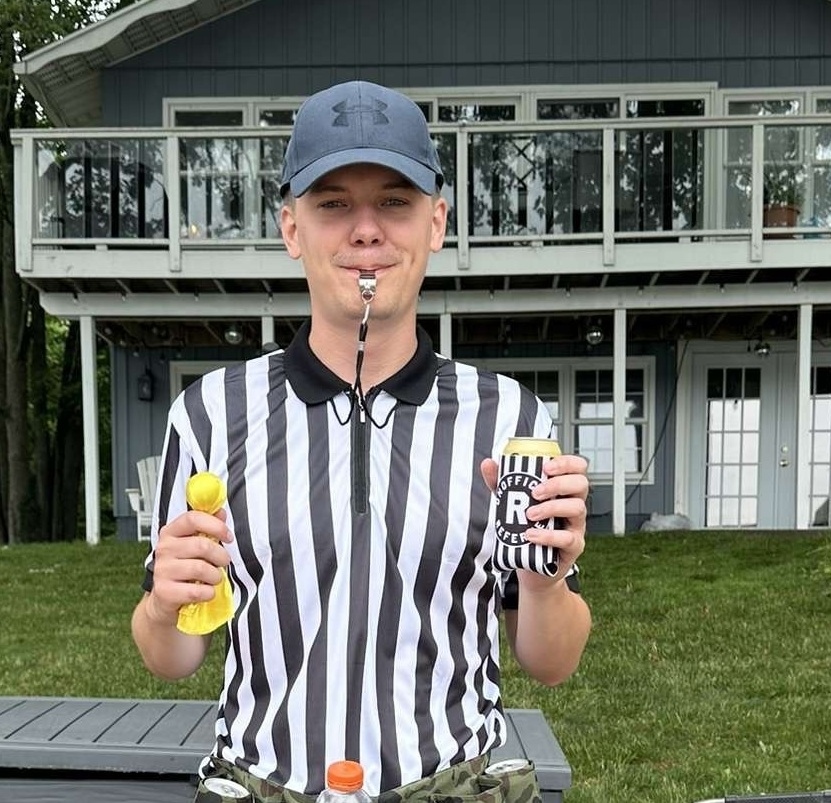
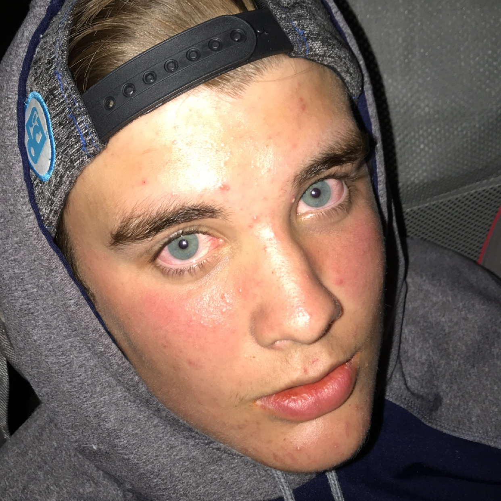

Team of the Week
- Fantasy Points30.50
- Receptions12
- Receiving Yards165
Austin Gauss's Puka Bites Back topped the league at 129.00 — the lowest league-high score of the 2026 season, in a week where only four teams cleared 120 and the average team scored just 107.58 (down from 130.02 in Week 5). Malik Nabers did the most damage, catching 12 passes for 165 yards in the Giants' 34-27 loss to New Orleans for 30.50 points. Kenneth Walker III added 29.9 on 128 rushing yards and two touchdowns in Kansas City's 22-6 win over the Chargers, and Jayden Daniels chipped in 22.0 with 300 passing yards and two touchdowns on Monday night. Those three alone account for 82.4 of Gauss's 129.00.
It was almost not enough. Zach Crook's What ACL? scored 124.32, the highest total by a team that lost, and Christian McCaffrey posted the league's best individual score at 30.7 on Monday night — two rushing touchdowns and nine catches for 53 yards in San Francisco's 23-17 win over Washington, fumble and all. But Crook left Tre Tucker's 28.7 (two touchdowns for the Raiders, including a 44-yarder) on the bench while starting MarShawn Lloyd's 1.0 in the flex, and the Jaguars D/ST's -4.0 nearly equaled the 4.68-point margin by itself.
Week 6 Results
Most Wanted
Chug Clause Violators — League Rule, Sec. "Other"

Miracles Come True
Started for Austin Gauss's Puka Bites Back and posted 29.9 points as Kansas City beat the Chargers 22-6. Paired with Malik Nabers' 30.5 and Jayden Daniels' 22.0, it was exactly enough to survive a 4.68-point scare from Zach Crook's What ACL? and move Puka Bites Back to 5-1.
Started for Adam Kahler's Njigba's in Paris and caught 12 passes for 134 yards in Seattle's 17-14 overtime loss to Denver on Thursday night. His 27.4 points were more than a quarter of Njigba's in Paris's 102.08, plenty to cover a 2.68-point escape over Adam Schon's Joshin Around.
Started for Brent Hurlburt's Uncle Lamb's and accounted for four touchdowns, three through the air and a quarterback sneak, as New Orleans beat the Giants 34-27. His 26.96 points, plus 21.1 from Chuba Hubbard (28 carries, 120 yards and a touchdown in Carolina's 25-14 win over Philadelphia), carried Uncle Lamb's to its first win since Week 1, an 11.02-point decision over Love Her Big Judkins.
Started for Zack Rollis's Zay it with Flowers and scored 24.3 in Buffalo's 33-30 win over Las Vegas. With Isaiah Likely adding 23.9 (six catches, 99 yards and a touchdown in the Giants' loss), those two produced 48.2 points of a 126.44 total in a 41.82-point blowout of Costa Rico, which left 75.5 points on its bench, the most in the league.
Injury Recap
Terry McLaurin
McLaurin fell awkwardly running a route in the first half of Monday night's 23-17 loss at San Francisco, was fitted with an air cast and carted off with a left knee injury. He finished with one catch for 27 yards and 3.7 points. Head coach Dan Quinn said the team fears the injury is significant, and no timetable has been given.
Saquon Barkley
Barkley was ruled out with a hamstring injury before Philadelphia's 25-14 loss to Carolina, his second straight missed game, and the Eagles also placed Will Shipley on injured reserve with a foot injury. Barkley stayed in Joshin Around's lineup and scored 0.0 (see Most Wanted).
Mike Evans
Evans left late in the first half of Monday night's win over Washington with Achilles tendinitis after catching three passes for 94 yards, finishing with 12.4 points. Head coach Kyle Shanahan said he won't need further testing and the injury isn't believed to be long-term.
Dalton Kincaid
Kincaid left Buffalo's win over Las Vegas in the third quarter with a rib injury and was listed questionable to return, but he came back in the fourth quarter with the game tied at 23. He finished with seven catches on eight targets for 38 yards and 10.8 points, and the injury appears minor.
DeVonta Smith
Smith was shaken up during the Eagles' loss to Carolina and went to the medical tent, but he returned and finished with seven catches for 75 yards and a touchdown (20.5 points) in his first game back after missing Week 5.